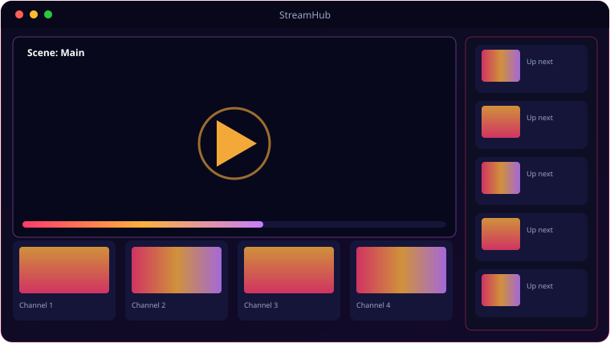

A look inside StreamHub.

Everything StreamHub brings to the table.
Scenes & Sources
Compose screen captures, webcams, images and video clips. Drag, resize and select right on the preview with per-source and window opacity.
Pro Transitions
Switch scenes with Fade, Slide, Wipe, Zoom or Stinger transitions for a broadcast-grade look.
Audio Mixer
Mix microphone and desktop loopback audio together before it ever leaves your machine.
Go Live over RTMP
Stream to any platform — set the RTMP URL, key, resolution and FPS, and FFmpeg pushes the broadcast.
Zero-Qt Core
The scene/compositor/streaming core has no UI dependencies — fully reusable and headless.
Headless CLI Edition
A separate terminal edition drives the same engine from a StreamHub> REPL — perfect for unattended boxes.
System requirements.
Minimum
- OS: Windows 10 (64-bit) or Windows 11
- CPU: Quad-core, 2.5 GHz
- Memory: 8 GB RAM
- Graphics: OpenGL 3.3 / DirectX 11 GPU
- Storage: 500 MB + space for media
- Display: 1366×768 or higher
Recommended
- OS: Windows 11 (64-bit)
- CPU: 6-core, 3.5 GHz or better
- Memory: 16 GB RAM
- Graphics: Dedicated GPU for smooth real-time work
- Storage: NVMe SSD with several GB free
- Display: 1920×1080 or higher
Requires FFmpeg on PATH for RTMP streaming. A webcam and capture-capable GPU help for multi-source scenes.
The details.
| Sources | Screen, webcam, image, video — drag/resize/select on a live preview |
| Transitions | Fade · Slide · Wipe · Zoom · Stinger |
| Audio | Microphone + desktop loopback, mixed pre-broadcast |
| Streaming | RTMP via FFmpeg (must be on PATH); platform/URL/key/resolution/fps in Settings |
| Editions | Packaged GUI release + headless CLI edition, each with its own installer |
| Platform | Windows 10 / 11 · Inno Setup installer |
Get StreamHub.
Scenes, sources and Go-Live RTMP streaming — GUI or headless.
⬇ Download StreamHubStreamHub_Setup.exe · free · Windows 10/11 · FFmpeg required